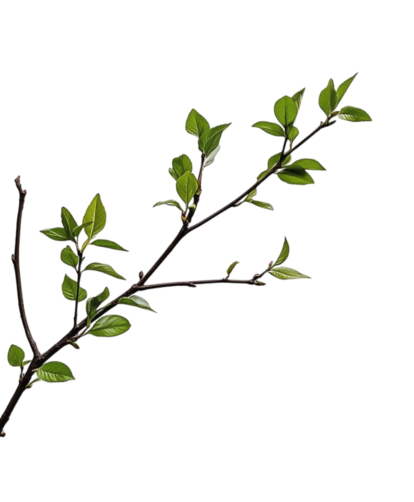

동래예찬 12선
동래의 맛과 멋, 이야기를 천천히 만나보세요.
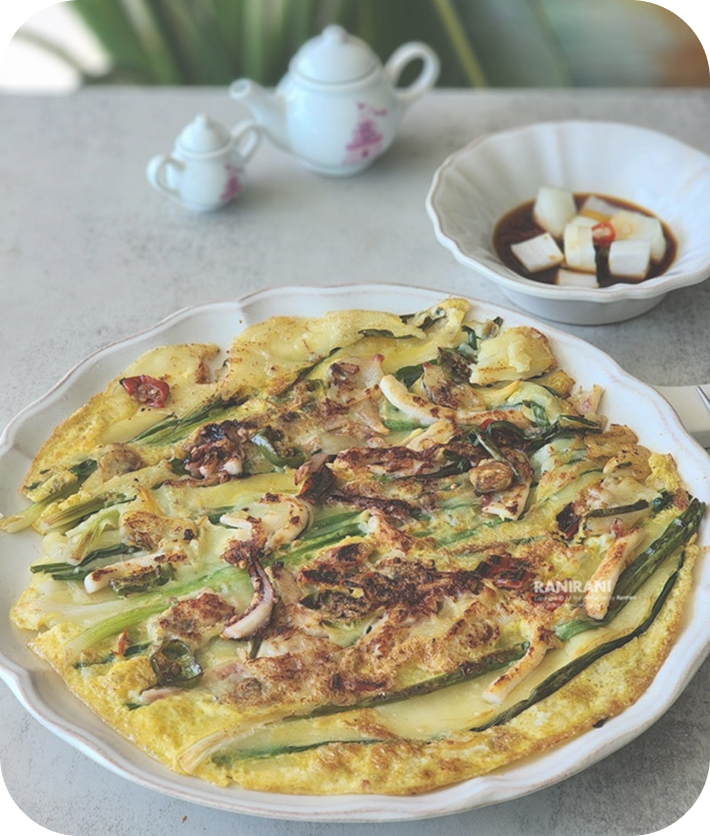
동래파전고소한 동래의 맛 충렬사나라를 지킨 선현을 기리는 사당 동래학춤우아하게
이어지는 춤사위
복천동고분군가야의 역사와 유물이 잠든 고분군
동래학춤우아하게
이어지는 춤사위
복천동고분군가야의 역사와 유물이 잠든 고분군
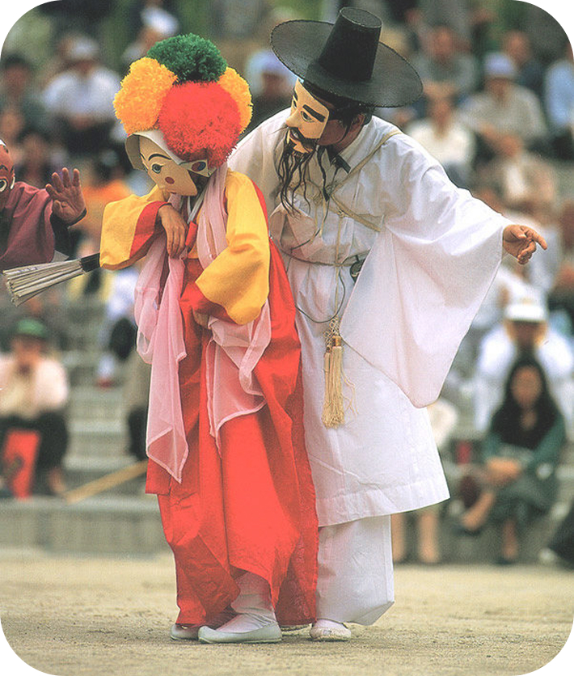
동래야류흥겨운 탈놀이 한마당 금강공원초록 속
산책
금강공원초록 속
산책
 동래온천오랜 온천의 역사를 품은 동래의 쉼터
동래온천오랜 온천의 역사를 품은 동래의 쉼터
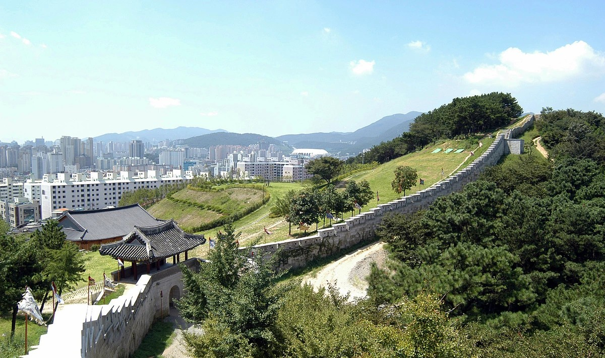
동래읍성지성곽길에서 만나는 동래의 역사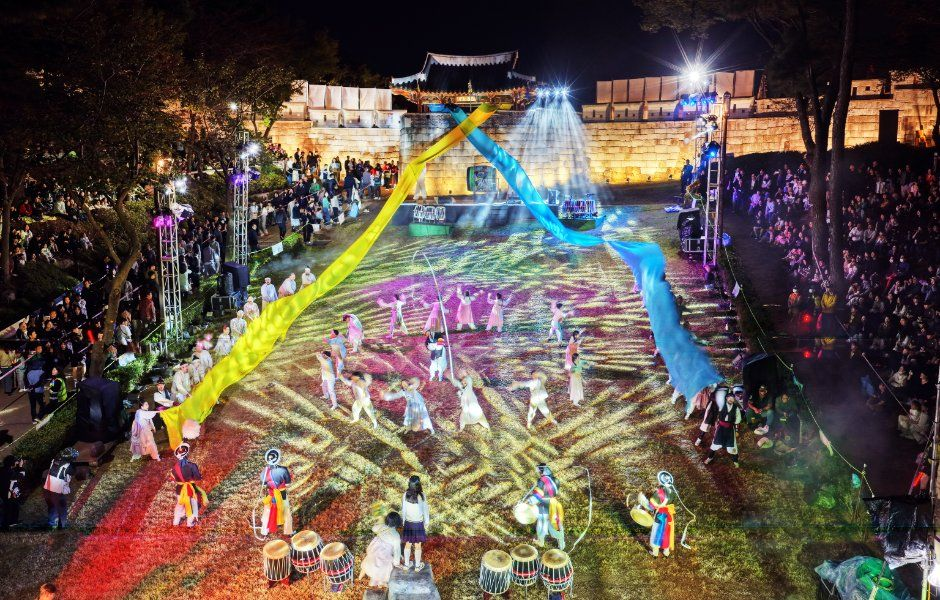
동래읍성역사축제동래의 역사와 문화를 되살리는 축제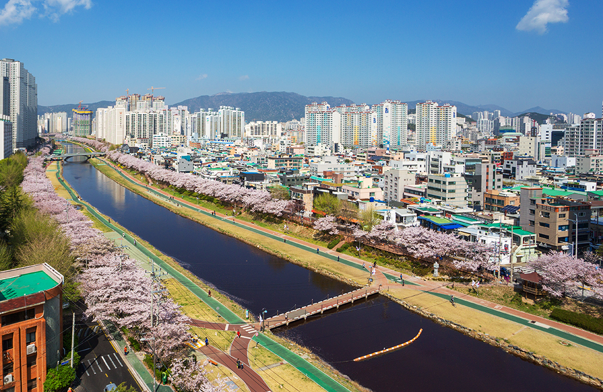
온천천 자연형하천도심 속 물길을 따라 걷는 산책로 동래 3•1 독립만세재현동래의 독립만세운동을 되새기는 재현 행사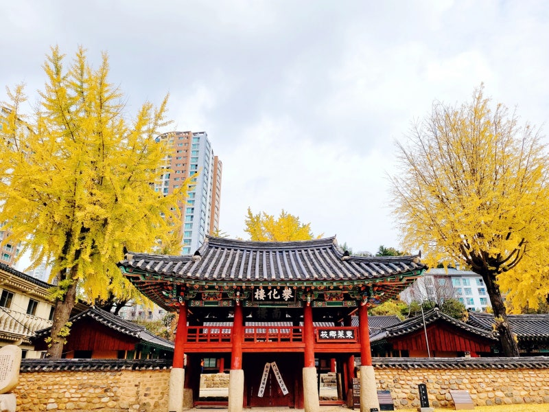
동래향교옛 선현을 기리는 전통 교육 공간EXPLORE DONGNAE
동래를 한눈에
궁금한 구역을 선택해 대표 장소를 살펴보세요.
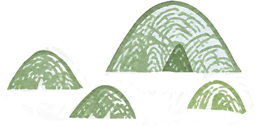
YOUR DONGNAE TRIP
맞춤코스추천
취향에 따라 골라보는 동래 여행 코스

동래읍성역사축제 및 이벤트 안내

지금 동래에서 만날 수 있는 다양한 이벤트

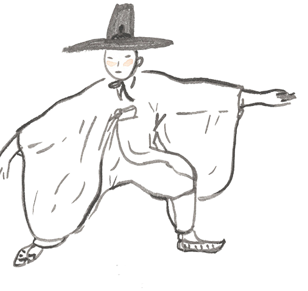
행사 자세히 보기 ↗
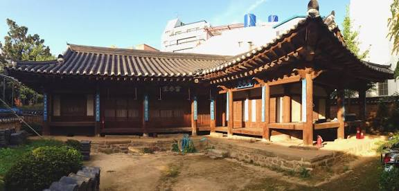
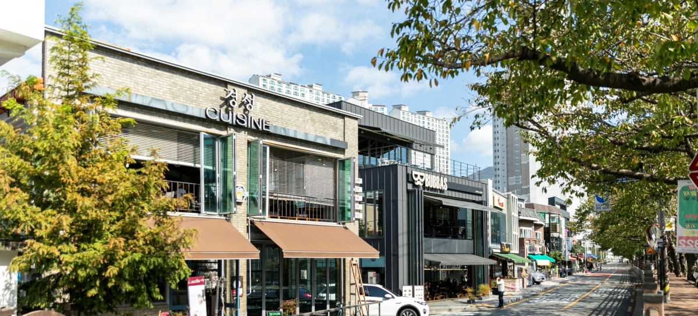
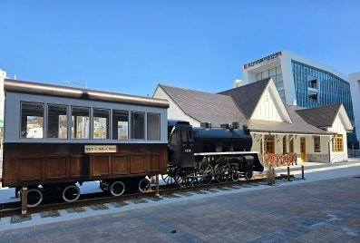
DONGNAE-Ollae GOODS
동래에서의 추억을 간직하자
동래올래와 함께하는 특별한 굿즈
머그컵물의
온도가 높으면 오몽이에서 뱁례로 변하는 신기한 머그컵
굿즈 전체보기 ↗
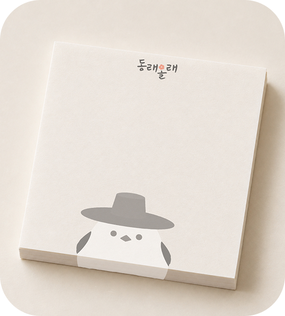
떡메모지중요한 건 까먹지 않게!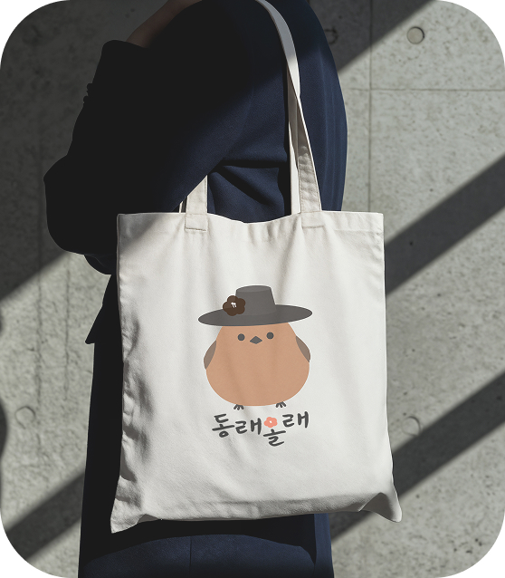
캔버스백튼튼한 원단으로 만들어서 활용도가 높아요오몽&뱁례 인형모자 탈부착이 가능한 폭신한 인형